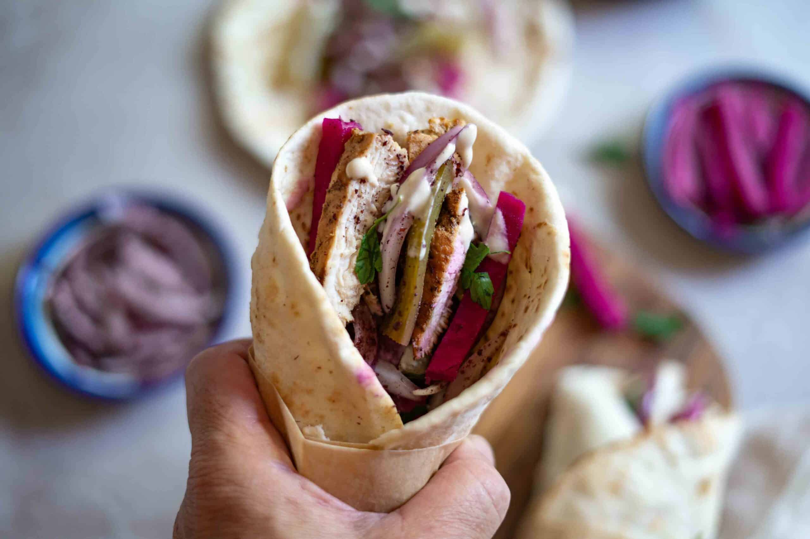
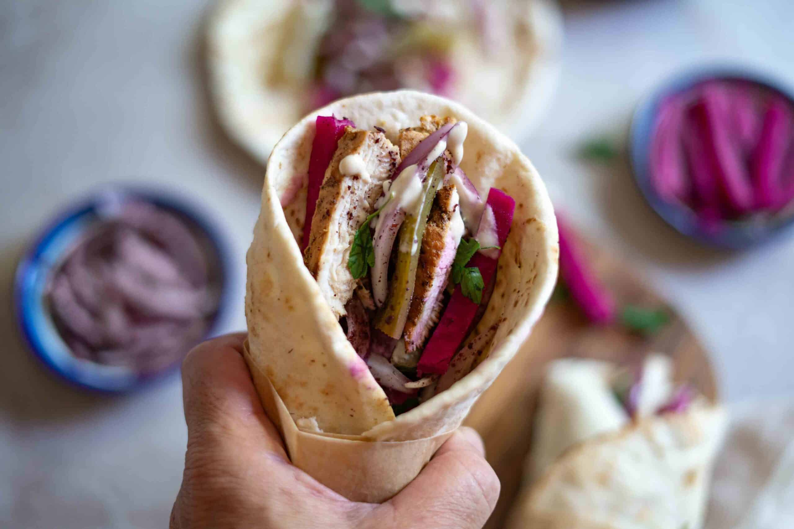

Shawarma is everyday street food in Palestine and has become mainstream food in the US. In my hometown Ramallah, when you walk around town you'll find small places specializing in making shawarma. It is a well-marinated meat (chicken, beef, or lamb) with a combination of spices layered on a vertical rotisserie or a long-standing skewer where it is slow-roasted until perfectly tender, juicy, and full of flavor which gives it a rich and aromatic flavor.
Recipe and images from Wafa Shami at Palestine in a Dish
------
 


Moribyan's recipe for a sushi bake is designed well both aesthetically and functinoally. It breaks everything down in detail, with plenty of pictures to support to text so the reader can see what it should look like as theyre making it. It also breaks up the recipe into the major parts of the sushi bake into larger and also more detailed steps.
Once upon a Chef's recipe for beef tacos has a lot of helpful layout features, like a jump to recipe button, access to reviews/comments at the top, but I also dislike that the layout is half ads on the right. It makes the page crowded and harder to find the information needed for the recipe.
Flavcity Has a well-designed recipe page for chicken wings, I really like that they have a section that is condensed, with just the basic information you need. They also have a checklist function for the ingredients so you can cross things off as you add them. It also has a function that lets adjust the recipe based on how many people you need to serve.
I like the design of LinkedIn because it has alot of negative space while still filling the page with content. There are three columns of content, but it doesn't feel crowded, so the page can hold more information without cluttering the screen. It also has clear navigational tools, liek the bar at the top and the repeated blocks of content.
I think that Pinterest's design is very unique but effective. It has a sort of puzzle-like piecing together quality to it the maximized the amount of content on the screen, but it stays organized so it is still visually pleasing.
Similar to Pinterest, Youtube has a nice and clear layout. I thas multiple levels on content, but there's a clear hierarchy for what the viewer is supposed to view first.